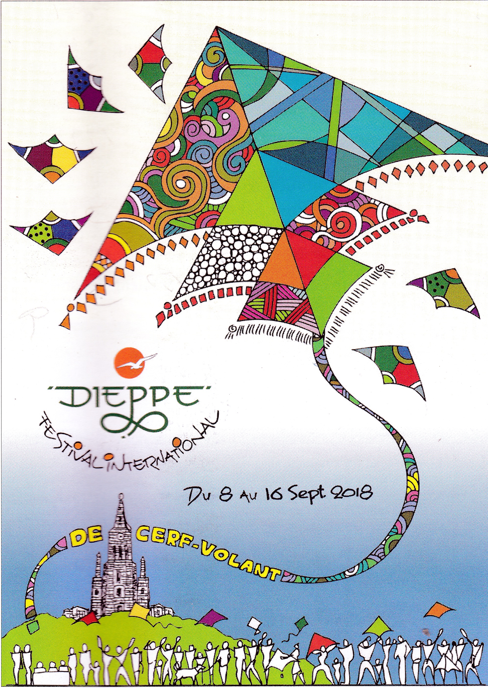

Affiche splendide de Kadesh, bien sûr !Dieppe, tout le monde sait où c'est ! J'arrive vendredi après-midi pour pouvoir choisir une bonne place. Ensuite, je monte, pour l'essayer, mon pseudo-Frantzen-Pottum que j'ai un peu modifié et qui n'a jamais bien volé. Il oscille toujours de part et d'autre et finit par faire 2 tours, chute sur le nez avec casse d'un bambou... Fin de la séance ! Plus tard, Thierry Nénot me passera un bambou de son stock mais il est nettement plus gros que le symétrique. De profil, on voit aussi qu'il faut modifier la bride. Je ne sais pas pourquoi j'ai attaché la bride avant à l'arrière du premier caisson et elle prend la plus grande partie de la tension. Du coup, le caisson arrière est détendu et ne joue pas son rôle directif. Je ferai d'abord cette modif, puis, si elle ne fait rien, une autre plus conforme au modèle mais inesthétique à mon goût... Je reprendrai tout ça à la maison, donc...
De profil, on voit aussi qu'il faut modifier la bride. Je ne sais pas pourquoi j'ai attaché la bride avant à l'arrière du premier caisson et elle prend la plus grande partie de la tension. Du coup, le caisson arrière est détendu et ne joue pas son rôle directif. Je ferai d'abord cette modif, puis, si elle ne fait rien, une autre plus conforme au modèle mais inesthétique à mon goût... Je reprendrai tout ça à la maison, donc... Au soir, on vous montre toujours le coucher de soleil avec celui-ci coupé par l'horizon ! Mais ici, il est plus beau quand il se couche derrière un banc de nuages...
Au soir, on vous montre toujours le coucher de soleil avec celui-ci coupé par l'horizon ! Mais ici, il est plus beau quand il se couche derrière un banc de nuages... Samedi matin, je débute par la salle d'exposition où aura lieu le briefing. Elle est déjà très occupée, par exemple par ces têtes de dragons qui retrouveront sans doute leur corps plus tard pour voler.
Samedi matin, je débute par la salle d'exposition où aura lieu le briefing. Elle est déjà très occupée, par exemple par ces têtes de dragons qui retrouveront sans doute leur corps plus tard pour voler. Beaucoup de photos de la délégation cambodgienne, à l'honneur cette année.
Beaucoup de photos de la délégation cambodgienne, à l'honneur cette année. Elle est venue avec un groupe de danse traditionnelle, cette image montre les positions des mains qui ont chacune leur sens : "feuilles", "jeunes feuilles", "croissance", "fruits", "floraison"...
Elle est venue avec un groupe de danse traditionnelle, cette image montre les positions des mains qui ont chacune leur sens : "feuilles", "jeunes feuilles", "croissance", "fruits", "floraison"... Un conteur, "Corbeau", adepte de la tribu des Lakotas (né dans une tribu du Nord, les Ch'timis, mais chut) narre sur scène des contes qu'il a écrits et fournit les textes de livrets bien décorés par un dessinateur de talent qui ajoute sous vos yeux en guise de dédicace un dessin à peine plus simple que celui de la couverture ci-contre sur une page blanche de votre achat. Et pas un gribouillis !
Un conteur, "Corbeau", adepte de la tribu des Lakotas (né dans une tribu du Nord, les Ch'timis, mais chut) narre sur scène des contes qu'il a écrits et fournit les textes de livrets bien décorés par un dessinateur de talent qui ajoute sous vos yeux en guise de dédicace un dessin à peine plus simple que celui de la couverture ci-contre sur une page blanche de votre achat. Et pas un gribouillis ! Sur les pelouses de vol, un spécialiste anime au Didgeridoo avec talent, lui aussi !
Sur les pelouses de vol, un spécialiste anime au Didgeridoo avec talent, lui aussi ! En l'air, on y arrive, beaucoup de cerfs-volants dont à droite le train de carpes Koï de Christian Bécot et, au centre, ma Colombe, pas encore bien réglée qui balance largement !
En l'air, on y arrive, beaucoup de cerfs-volants dont à droite le train de carpes Koï de Christian Bécot et, au centre, ma Colombe, pas encore bien réglée qui balance largement ! Un visiteur de la planète Steam-Punk vient nous saluer ! Claude a encore ajouté de l'or à son fastueux costume, mais il est devenu trop lourd pour marcher vite et il ne fait plus la Parade en ville avec.
Un visiteur de la planète Steam-Punk vient nous saluer ! Claude a encore ajouté de l'or à son fastueux costume, mais il est devenu trop lourd pour marcher vite et il ne fait plus la Parade en ville avec. Les 2 week-ends, il y aura un monde fou sur les routes et les pelouses, comme à notre atelier de décoration de cerf-volant, assez saturé... Isabelle et Yves Goupillon doivent se contenter d'un sandwich en travaillant !
Les 2 week-ends, il y aura un monde fou sur les routes et les pelouses, comme à notre atelier de décoration de cerf-volant, assez saturé... Isabelle et Yves Goupillon doivent se contenter d'un sandwich en travaillant ! Le club de Sens est arrivé et le Nautilus géant vogue dans les airs !
Le club de Sens est arrivé et le Nautilus géant vogue dans les airs ! Pour les Vols de Colombes que le CVCF, l'AKA (American Kiteflyers Association) et d'autres réaliseront tous les jours (à 27 parfois), Raymond Chauchard a réalisé pour rire une Colombe en mousse de plastique à monter... Amusante, mais il ne la fait pas voler...
Pour les Vols de Colombes que le CVCF, l'AKA (American Kiteflyers Association) et d'autres réaliseront tous les jours (à 27 parfois), Raymond Chauchard a réalisé pour rire une Colombe en mousse de plastique à monter... Amusante, mais il ne la fait pas voler... En écho à la pêche en mer par cerf-volant qui fait l'objet d'un concours durant le festival, François Périault a créé une pêche pour les enfants avec un cerf-volant dont il tient la ligne, un fil qui pend terminé par un aimant et des poissons au nez de fer dans un étang (petit) !
En écho à la pêche en mer par cerf-volant qui fait l'objet d'un concours durant le festival, François Périault a créé une pêche pour les enfants avec un cerf-volant dont il tient la ligne, un fil qui pend terminé par un aimant et des poissons au nez de fer dans un étang (petit) ! L'attraction plaira beaucoup aux enfants que leurs parents doivent tirer par le bras avec force !
L'attraction plaira beaucoup aux enfants que leurs parents doivent tirer par le bras avec force ! Mais l'étang des poissons plaira beaucoup aux chiens et François le remplacera par une gamelle en inox plus robuste... Là-haut, toujours beaucoup de cerfs-volants, individuels ou en groupes coordonnés...
Mais l'étang des poissons plaira beaucoup aux chiens et François le remplacera par une gamelle en inox plus robuste... Là-haut, toujours beaucoup de cerfs-volants, individuels ou en groupes coordonnés... Petit passage dans la tente du Cambodge, profitant de la baisse de clientèle de l'atelier. Y sont présentés des images des spectacles "Sbek Thom" quasiment en ombre chinoise, sur fond de ciel ou derrière un drap tendu éclairé par le feu, donnés chez eux à l'aide de panneaux ajourés représentant divers personnages...
Petit passage dans la tente du Cambodge, profitant de la baisse de clientèle de l'atelier. Y sont présentés des images des spectacles "Sbek Thom" quasiment en ombre chinoise, sur fond de ciel ou derrière un drap tendu éclairé par le feu, donnés chez eux à l'aide de panneaux ajourés représentant divers personnages... Vus de près, ces panneaux sont rigidifiés par 2 longerons tenus en main par les acteurs qui dansent en fonction du personnage et de l'histoire !
Vus de près, ces panneaux sont rigidifiés par 2 longerons tenus en main par les acteurs qui dansent en fonction du personnage et de l'histoire ! Tao, la sympathique mascotte du festival vient nous faire une petite visite en passant !
Tao, la sympathique mascotte du festival vient nous faire une petite visite en passant ! De retour vers mon fourgon-chambre-à-coucher, je passe devant la stèle du Calgary Regiment canadien qui a été presqu'entièrement sacrifié pour l'opération Jubilee de débarquement sans espoir, destinée à faire revenir vers l'Ouest des renforts allemands pour soulager le front russe sur leur demande instante et désespérée...
De retour vers mon fourgon-chambre-à-coucher, je passe devant la stèle du Calgary Regiment canadien qui a été presqu'entièrement sacrifié pour l'opération Jubilee de débarquement sans espoir, destinée à faire revenir vers l'Ouest des renforts allemands pour soulager le front russe sur leur demande instante et désespérée... Sur les galets de la plage, Guillaume Nizin a déployé ses grands et magnifiques bols "à tétines". D'après mes souvenirs, il y a 25 pièces par tétine (mais ça dépend de leur taille qui varie constamment du bord vers le centre. Alors faites la multiplication et imaginez les km et les heures de couture !
Sur les galets de la plage, Guillaume Nizin a déployé ses grands et magnifiques bols "à tétines". D'après mes souvenirs, il y a 25 pièces par tétine (mais ça dépend de leur taille qui varie constamment du bord vers le centre. Alors faites la multiplication et imaginez les km et les heures de couture ! La parade en ville se monte, la délégation cambodgienne se prépare, vêtue de somptueux costumes et accessoires, comme ces éventails de feuilles tout faits.
La parade en ville se monte, la délégation cambodgienne se prépare, vêtue de somptueux costumes et accessoires, comme ces éventails de feuilles tout faits. Le grand chat d'Emmanuel Duba lorgne sur cette tentante méduse de Fausto Maroccu levée par une grande canne...
Le grand chat d'Emmanuel Duba lorgne sur cette tentante méduse de Fausto Maroccu levée par une grande canne... Notre ami belge s'est mis en costume de chez lui qui me rappelle d'ailleurs celui de Normandie avec la "plaude" et le foulard !
Notre ami belge s'est mis en costume de chez lui qui me rappelle d'ailleurs celui de Normandie avec la "plaude" et le foulard ! Un cerf-volant genre "lunettes de soleil d'esquimaux en bois" dont la stabilité me surprend toujours, ici monté sur manche pour la parade !
Un cerf-volant genre "lunettes de soleil d'esquimaux en bois" dont la stabilité me surprend toujours, ici monté sur manche pour la parade ! Un aérophotographe "Garder le KAP" a trouvé une minuscule canne pour un cerf-volant de quelques cm mais qui vole très bien !
Un aérophotographe "Garder le KAP" a trouvé une minuscule canne pour un cerf-volant de quelques cm mais qui vole très bien ! Le Cambodge promènera aussi un grand cerf-volant Papkao. Ce cerf-volant "femelle" sert dans des combats traditionnels, attaqué par de multiples Chulahs "mâles" plus petits et dotés de crochets !
Le Cambodge promènera aussi un grand cerf-volant Papkao. Ce cerf-volant "femelle" sert dans des combats traditionnels, attaqué par de multiples Chulahs "mâles" plus petits et dotés de crochets ! Les Cambodgiens mettent bien sûr en valeur un de leur cerfs-volants si particuliers !
Les Cambodgiens mettent bien sûr en valeur un de leur cerfs-volants si particuliers ! La banderole, la voilà, entre les mains des membres de l'orchestre, dans leurs uniformes très militaires.
La banderole, la voilà, entre les mains des membres de l'orchestre, dans leurs uniformes très militaires. En tête marchera Claude, dans une tenue Steam-Punk mais très allégée par rapport à celle avec laquelle il déambule sur l'herbe et que j'ai montrée plus haut...
En tête marchera Claude, dans une tenue Steam-Punk mais très allégée par rapport à celle avec laquelle il déambule sur l'herbe et que j'ai montrée plus haut... Cette handicapée pourra suivre commodément la parade sur la banquette de son char (GB) qu'on attelle maintenant à un tracteur adapté aux conditions !
Cette handicapée pourra suivre commodément la parade sur la banquette de son char (GB) qu'on attelle maintenant à un tracteur adapté aux conditions ! Des cerfs-volants caractéristiques du Guatemala, bien sûr mais les cervolistes ont une particularité, regardez-les bien avant de cliquer...
Des cerfs-volants caractéristiques du Guatemala, bien sûr mais les cervolistes ont une particularité, regardez-les bien avant de cliquer... Ici, on est plus asiatique avec cette charmante demoiselle en kimono...
Ici, on est plus asiatique avec cette charmante demoiselle en kimono... Tao a réussi à faire du stop pour se faire promener mais gageons qu'il descendra pour des bains de foule ! Le véhicule est super-équipé avec des volants supplémentaires pour les petits, mais leur siège est occupé par des packs de flotte à distribuer aux marcheurs et porteurs de bannières et autres...
Tao a réussi à faire du stop pour se faire promener mais gageons qu'il descendra pour des bains de foule ! Le véhicule est super-équipé avec des volants supplémentaires pour les petits, mais leur siège est occupé par des packs de flotte à distribuer aux marcheurs et porteurs de bannières et autres... En passant, un bel oiseau noir et gris qui, lui, ne fatiguera pas trop pendant la marche (comme moi, mais j'ai un certificat médical)...
En passant, un bel oiseau noir et gris qui, lui, ne fatiguera pas trop pendant la marche (comme moi, mais j'ai un certificat médical)... Devant le stand CVCF (très grand cette année, 2 barnums dont un pour l'aérophoto, merci Sandrine), Yves Goupillon pose avec une belle bannière CVCF empruntée sans doute à la région Alsace vue la belle cigogne !
Devant le stand CVCF (très grand cette année, 2 barnums dont un pour l'aérophoto, merci Sandrine), Yves Goupillon pose avec une belle bannière CVCF empruntée sans doute à la région Alsace vue la belle cigogne ! Les participants de toutes nationalités s'amassent de plus en plus. Devant nos barnums, François a planté la bannière, sur laquelle on nous a demandé plusieurs fois des explications, de sa ville, Verneuil-sur-Avre, ...
Les participants de toutes nationalités s'amassent de plus en plus. Devant nos barnums, François a planté la bannière, sur laquelle on nous a demandé plusieurs fois des explications, de sa ville, Verneuil-sur-Avre, ... J'aime bien ces oiseaux à plumes multiples, l'un d'eux a eu un prix il y a 2 ans...
J'aime bien ces oiseaux à plumes multiples, l'un d'eux a eu un prix il y a 2 ans... Du haut de la tribune des spectateurs du terrain de présentation, on peut voir le départ du défilé...
Du haut de la tribune des spectateurs du terrain de présentation, on peut voir le départ du défilé... Au-dessus, le météo de Christian Bécot qui vole du matin au soir. On le reconnait à son caisson avant, dont le bord arrière est coupé en biais pour lui éviter de flapper... Il a quand même un "jarret" comme dit Nénot d'un pli en pleine toile, mais ça ne gêne pas le vol.
Au-dessus, le météo de Christian Bécot qui vole du matin au soir. On le reconnait à son caisson avant, dont le bord arrière est coupé en biais pour lui éviter de flapper... Il a quand même un "jarret" comme dit Nénot d'un pli en pleine toile, mais ça ne gêne pas le vol. Sur la plage on déplace les sacs d'ancrage en fonction du vent (qui fait demi-tour quand se lève la brise de mer vers 11 h30). Ces sacs servent pour les gros gonflables ou les bols, qui tirent d'enfer !
Sur la plage on déplace les sacs d'ancrage en fonction du vent (qui fait demi-tour quand se lève la brise de mer vers 11 h30). Ces sacs servent pour les gros gonflables ou les bols, qui tirent d'enfer ! Dans le stand, Thierry me montre en privé un Météo d'origine acheté sur le Net. Il n'est pas très grand, ses bambous sont assez fins comme sa toile (de coton je crois)... Les ailes sont moins arrondies et ont donc moins de surface que sur le plan publié au Lucane où elles font carrément un quart de cercle.
Dans le stand, Thierry me montre en privé un Météo d'origine acheté sur le Net. Il n'est pas très grand, ses bambous sont assez fins comme sa toile (de coton je crois)... Les ailes sont moins arrondies et ont donc moins de surface que sur le plan publié au Lucane où elles font carrément un quart de cercle. A l'arrière, un marquage indiquant sa qualité et qu'en faire s'il s'est évadé par hasard ! Il est bizarre qu'il soit à la fois militaire et géré par le Ministère des Inventions ??
A l'arrière, un marquage indiquant sa qualité et qu'en faire s'il s'est évadé par hasard ! Il est bizarre qu'il soit à la fois militaire et géré par le Ministère des Inventions ?? Sur l'autre face, et sur un pavé d'encre bleue, il est rappelé qu'il a été breveté par Nerlow dont personnellement je n'avais jamais entendu parler.
Sur l'autre face, et sur un pavé d'encre bleue, il est rappelé qu'il a été breveté par Nerlow dont personnellement je n'avais jamais entendu parler. Midi, ce week-end, l'atelier est beaucoup plus calme. Mais le week-end prochain, aucune pause de 9h30 à 18h30 (Isabelle et Yves Goupillon devront dévorer un sandwich apporté par François en travaillant) et les 2 tables de travail seront constamment pleines...
Midi, ce week-end, l'atelier est beaucoup plus calme. Mais le week-end prochain, aucune pause de 9h30 à 18h30 (Isabelle et Yves Goupillon devront dévorer un sandwich apporté par François en travaillant) et les 2 tables de travail seront constamment pleines... La mare aux poissons de François plait beaucoup aux chiens assoiffés. Il achètera pour eux une bassine en inox plus sanitaire...
La mare aux poissons de François plait beaucoup aux chiens assoiffés. Il achètera pour eux une bassine en inox plus sanitaire... Sur la scène, les Cambodgiens se produisent régulièrement. Ici, la Danse du Paon avec un superbe costume ailé et queuté comportant un cou et une tête de paon en guise de chapeau...
Sur la scène, les Cambodgiens se produisent régulièrement. Ici, la Danse du Paon avec un superbe costume ailé et queuté comportant un cou et une tête de paon en guise de chapeau... Une arche amusante de petits cerfs-volants porteurs de longues queues qui donnent à l'ensemble une bonne présence...
Une arche amusante de petits cerfs-volants porteurs de longues queues qui donnent à l'ensemble une bonne présence... Je prend un peu de liberté pour traverser l'allée centrale et voir les pilotables et les combattants. Il y a aussi moins de barnums, mais le club de Dieppe nous invitera à un pot dans le sien, tout au bout de la rangée côté château....
Je prend un peu de liberté pour traverser l'allée centrale et voir les pilotables et les combattants. Il y a aussi moins de barnums, mais le club de Dieppe nous invitera à un pot dans le sien, tout au bout de la rangée côté château.... Repas midi et soir dans le barnum restaurant. Il est 14 h et en week-end, les 2 queues peuvent atteindre l'une comme l'autre 40 mn !
Repas midi et soir dans le barnum restaurant. Il est 14 h et en week-end, les 2 queues peuvent atteindre l'une comme l'autre 40 mn ! Mais il y a quand même du spectacle en l'air et dans les Jardins du vent !
Mais il y a quand même du spectacle en l'air et dans les Jardins du vent ! Tiens, Pierre Marzin est présent avec une variante plus étoffée de son cerf-volant deuxième (je crois) au concours il y a 2 ans....
Tiens, Pierre Marzin est présent avec une variante plus étoffée de son cerf-volant deuxième (je crois) au concours il y a 2 ans.... Je crois que c'est avec celui-ci qu'il avait concouru, "Eclipse", des disques qui s'éclipsaient mutuellement, ou masquaient le soleil qui projetait alors sur les autres une ombre en croissant...
Je crois que c'est avec celui-ci qu'il avait concouru, "Eclipse", des disques qui s'éclipsaient mutuellement, ou masquaient le soleil qui projetait alors sur les autres une ombre en croissant... Ce dimanche vers 15 h, il devient difficile de circuler à pied dans les allées, je plains ceux qui sont imprévoyants et sont venus en voiture...
Ce dimanche vers 15 h, il devient difficile de circuler à pied dans les allées, je plains ceux qui sont imprévoyants et sont venus en voiture... Guillaume Nizin a réalisé encore une oeuvre démesurée et splendide mais très légère et originale : c'est une arche dont la corde est remplacée par une banderole de pièces assemblées, faisant corps aussi avec les Eddies. et les queues sont du même tabac. Le total, Eddies, corde de l'arche, queues, est formé d'un esthétique quadrillage de carrés multicolores... Et ce ne sont pas de petits CVs : les Eddies, à vue de nez, font 1,50 m de long !
Guillaume Nizin a réalisé encore une oeuvre démesurée et splendide mais très légère et originale : c'est une arche dont la corde est remplacée par une banderole de pièces assemblées, faisant corps aussi avec les Eddies. et les queues sont du même tabac. Le total, Eddies, corde de l'arche, queues, est formé d'un esthétique quadrillage de carrés multicolores... Et ce ne sont pas de petits CVs : les Eddies, à vue de nez, font 1,50 m de long ! Georges Peters est présent sur le terrain et je suis très fier de voler sur le même terrain que lui, même s'il ne me regarde pas ! Il a ressorti son magnifique capricorne et quelques personnages fantasmagoriques comme l'indien à la coiffure de longues plumes.
Georges Peters est présent sur le terrain et je suis très fier de voler sur le même terrain que lui, même s'il ne me regarde pas ! Il a ressorti son magnifique capricorne et quelques personnages fantasmagoriques comme l'indien à la coiffure de longues plumes. Dans la tente "L'Atelier des Artistes", certains exposent, mais le but est surtout de créer en direct, sous les yeux des spectateurs... Daniela Zitzmann est en train d'assembler un petit cerf-volant original à structure de bambou. Cette matière est très utilisée par les créateurs, elle est légère, pas chère pour des essais et possède une bonne souplesse..
Dans la tente "L'Atelier des Artistes", certains exposent, mais le but est surtout de créer en direct, sous les yeux des spectateurs... Daniela Zitzmann est en train d'assembler un petit cerf-volant original à structure de bambou. Cette matière est très utilisée par les créateurs, elle est légère, pas chère pour des essais et possède une bonne souplesse.. Voici d'autres créations qui marient une rigueur géométrique et des touffes échevelées...
Voici d'autres créations qui marient une rigueur géométrique et des touffes échevelées... Une structure classique du Guatemala, un octaèdre gréé d'un fil tenseur extérieur qui porte des franges... De très beaux aras dans une jungle onirique !
Une structure classique du Guatemala, un octaèdre gréé d'un fil tenseur extérieur qui porte des franges... De très beaux aras dans une jungle onirique ! Je pars pour une tournée des stands des délégations. Ces beaux portraits ne sont pas que des peintures à plat sur une toile...
Je pars pour une tournée des stands des délégations. Ces beaux portraits ne sont pas que des peintures à plat sur une toile... Les tresses sont découpées et armées de façon à bien ressortir en vol !
Les tresses sont découpées et armées de façon à bien ressortir en vol ! Au Guatemala, on est passé de l'octogone au dodécagone avec ces belles têtes ornées mais morbides... Mais cela fait partie de leur culture, les enfants sucent des crânes en sucre sans que cela les dissuade !
Au Guatemala, on est passé de l'octogone au dodécagone avec ces belles têtes ornées mais morbides... Mais cela fait partie de leur culture, les enfants sucent des crânes en sucre sans que cela les dissuade ! Je ne résiste pas au plaisir de re-montrer ces belles et originales fourmis de grande taille de Eric Aouara-Ott (Ott car il a aussi des origines alsaciennes)...
Je ne résiste pas au plaisir de re-montrer ces belles et originales fourmis de grande taille de Eric Aouara-Ott (Ott car il a aussi des origines alsaciennes)... Au stand du Royaume-Uni, une mosaïque des colombes de Karl Longbottom... Il en a gentiment prêté une dizaine à ceux qui n'avaient pas su en créer d'originales voire pas même pensé !
Au stand du Royaume-Uni, une mosaïque des colombes de Karl Longbottom... Il en a gentiment prêté une dizaine à ceux qui n'avaient pas su en créer d'originales voire pas même pensé ! Le Team Mangalore, de l'Inde a créé comme d'habitude beaucoup de cerfs-volants dans son style particulier...
Le Team Mangalore, de l'Inde a créé comme d'habitude beaucoup de cerfs-volants dans son style particulier... Kadek a créé pour l'Indonésie des oeuvres très détaillées comme ce Wau-Bulan traditionnel au lobe inférieur séparé et en forme de croissant de lune...
Kadek a créé pour l'Indonésie des oeuvres très détaillées comme ce Wau-Bulan traditionnel au lobe inférieur séparé et en forme de croissant de lune... Si vous ne connaissez pas votre carte d\'Europe, copiez celle-ci. Vous n'aurez pas de mal à trouver Paris, mais pour les autres capitales, il faudra bien réfléchir !
Si vous ne connaissez pas votre carte d\'Europe, copiez celle-ci. Vous n'aurez pas de mal à trouver Paris, mais pour les autres capitales, il faudra bien réfléchir ! La Chine présente comme d'habitude des variantes de EDO aux personnages effrayants mais exagérés en grotesques...
La Chine présente comme d'habitude des variantes de EDO aux personnages effrayants mais exagérés en grotesques... D'autres de Chine avec un hommage à un sport sacré, le Sumo dont les combattants peuvent atteindre plus de 160 kg !
D'autres de Chine avec un hommage à un sport sacré, le Sumo dont les combattants peuvent atteindre plus de 160 kg ! Un autre Wau-Bulan "mille-fleurs", de Malaisie me semble-t-il...
Un autre Wau-Bulan "mille-fleurs", de Malaisie me semble-t-il... L'affiche à droite n'est pas de la pub pour une marque d'apéritif mais pour la Martinique ! C'est le stand de Désiré qui réalise toujours des cerfs-volants avec une seule feuille, renforcée quand elle est grande...
L'affiche à droite n'est pas de la pub pour une marque d'apéritif mais pour la Martinique ! C'est le stand de Désiré qui réalise toujours des cerfs-volants avec une seule feuille, renforcée quand elle est grande... Les Pays-Bas ont réalisé cette miniature de magasin de cerf-volant avec ses comptoirs, ses étagères... et plein de cerfs-volants aussi miniaturisés...
Les Pays-Bas ont réalisé cette miniature de magasin de cerf-volant avec ses comptoirs, ses étagères... et plein de cerfs-volants aussi miniaturisés... Les Philippines aussi construisent des engins à la gloire de dieux volants et très détaillés...
Les Philippines aussi construisent des engins à la gloire de dieux volants et très détaillés... Le stand italien ? Pas trouvé, seulement un stand de Sardaigne avec de beaux ensembles géométriques...
Le stand italien ? Pas trouvé, seulement un stand de Sardaigne avec de beaux ensembles géométriques... La Suède produit toujours de beaux cerfs-volants de plumes, de cygne en particulier qui sont très blanches. Mais elle a aussi des figures plus classiques comme ce Phénix qui renait par le feu comme tout Phénix...
La Suède produit toujours de beaux cerfs-volants de plumes, de cygne en particulier qui sont très blanches. Mais elle a aussi des figures plus classiques comme ce Phénix qui renait par le feu comme tout Phénix... En Australie, les harmonieuses oeuvres de Robert Brasington...
En Australie, les harmonieuses oeuvres de Robert Brasington... La Thaïlande est experte en Papkao... Les petites rosaces de déco sont collées là en fait pour maintenir le réseau de fils qui consolident le papier des ailes et évitent les longues déchirures lors des combats.
La Thaïlande est experte en Papkao... Les petites rosaces de déco sont collées là en fait pour maintenir le réseau de fils qui consolident le papier des ailes et évitent les longues déchirures lors des combats. Voici le détail des rosaces de renfort, le plus souvent en plusieurs morceaux, un d'eux est collé sur chaque fil !
Voici le détail des rosaces de renfort, le plus souvent en plusieurs morceaux, un d'eux est collé sur chaque fil ! Ce grand "oiseau" à queue est splendide....
Ce grand "oiseau" à queue est splendide.... Celui-ci illustre bien la qualité du travail : les rosaces sont de plus en plus petites vers la naissance de la queue...
Celui-ci illustre bien la qualité du travail : les rosaces sont de plus en plus petites vers la naissance de la queue... J'ai bien aimé ces décos, en appliqué rehaussé d'ombres à l'aérographe... J'ai vu voler en particulier une splendide tête de girafe, mais trop loin pour la photo.
J'ai bien aimé ces décos, en appliqué rehaussé d'ombres à l'aérographe... J'ai vu voler en particulier une splendide tête de girafe, mais trop loin pour la photo. Un jardin du vent de poissons stylisés façon Inuit...
Un jardin du vent de poissons stylisés façon Inuit... Les chats d'Emmanuel Duba continuent à se reproduire, ici des "chats dans un jeu de quilles".
Les chats d'Emmanuel Duba continuent à se reproduire, ici des "chats dans un jeu de quilles". Plus loin, les toujours remarquables manches à air en dentelle de Robert Renaud (qui sera au palmarès)...
Plus loin, les toujours remarquables manches à air en dentelle de Robert Renaud (qui sera au palmarès)... Puis les éoliennes supersoniques de Mark Vercauteren, aussi réflectorisées pour le vol de nuit....
Puis les éoliennes supersoniques de Mark Vercauteren, aussi réflectorisées pour le vol de nuit.... Un jardin, composé entre autres de papillons découpés dans des panneaux publicitaires (de Christian Tosolini ?).
Un jardin, composé entre autres de papillons découpés dans des panneaux publicitaires (de Christian Tosolini ?). Une jolie bannière de tulle décorée de signes musicaux. Je ne sais pas qui est l'auteur. Je crois que le responsable remplace Robert Valkenburg, l'auteur des sophistiquées harpes éoliennes suspendues à caisse de résonance...
Une jolie bannière de tulle décorée de signes musicaux. Je ne sais pas qui est l'auteur. Je crois que le responsable remplace Robert Valkenburg, l'auteur des sophistiquées harpes éoliennes suspendues à caisse de résonance... Quant à ces bannières à l'idée amusante, je ne sais pas du tout. Le fourgon est peut-être celui de Bruno Tondelier...
Quant à ces bannières à l'idée amusante, je ne sais pas du tout. Le fourgon est peut-être celui de Bruno Tondelier... Michael Alvarez aime bien jouer avec les enfants, ordinairement avec un serpent pendu à une canne. Ici, il a une marionnette de lézard en tricot serré qu'il manipule avec ses doigts pour en ouvrir et fermer la gueule !
Michael Alvarez aime bien jouer avec les enfants, ordinairement avec un serpent pendu à une canne. Ici, il a une marionnette de lézard en tricot serré qu'il manipule avec ses doigts pour en ouvrir et fermer la gueule ! Devant la tente CVCF, les enfants font la queue pour tenir un instant la bobine de mon cerf-volant...
Devant la tente CVCF, les enfants font la queue pour tenir un instant la bobine de mon cerf-volant... Tout un jeu de vélos est apparu, de toutes tailles sauf la bonne... William Venant veut rouler avec, mais il a les jambes un peu courtes pour pédaler en sécurité !
Tout un jeu de vélos est apparu, de toutes tailles sauf la bonne... William Venant veut rouler avec, mais il a les jambes un peu courtes pour pédaler en sécurité ! Pour Eric Aouara, son vélo est bien grand mais la position est à peu près normale...
Pour Eric Aouara, son vélo est bien grand mais la position est à peu près normale... Par contre, cet engin est vraiment petit, mais roulable (pas loin !) avec un peu d'entraînement...
Par contre, cet engin est vraiment petit, mais roulable (pas loin !) avec un peu d'entraînement... C'est l'heure des trains, dégagez ! Ils volent, mais il reste un avion vert qui n'a pas compris le problème... Et effectivement, 5 mn après, il touche le train et s'enroule autour. Plus qu'à ramener tout le train jusqu'au point de croisement et à démêler ! On va plutôt appliquer la méthode habituelle : on ramène jusqu'à la tête, on abaisse son menton, et tout le train tombe car la tête commande tous les disques. On démêle et on relance.
C'est l'heure des trains, dégagez ! Ils volent, mais il reste un avion vert qui n'a pas compris le problème... Et effectivement, 5 mn après, il touche le train et s'enroule autour. Plus qu'à ramener tout le train jusqu'au point de croisement et à démêler ! On va plutôt appliquer la méthode habituelle : on ramène jusqu'à la tête, on abaisse son menton, et tout le train tombe car la tête commande tous les disques. On démêle et on relance. Yves Goupillon est sorti pour régler sa Colombe qui n'allait pas du tout, les ailes se repliaient individuellement vers l'arrière ! Il a maintenant résolu le problème et pourra participer sans peine aux vols quotidiens.
Yves Goupillon est sorti pour régler sa Colombe qui n'allait pas du tout, les ailes se repliaient individuellement vers l'arrière ! Il a maintenant résolu le problème et pourra participer sans peine aux vols quotidiens. En passant, un petit pot chez les Allemands, pas beaucoup de liquide mais c'est du fort, il y a intérêt à préparer une tartine de pain noir avant !
En passant, un petit pot chez les Allemands, pas beaucoup de liquide mais c'est du fort, il y a intérêt à préparer une tartine de pain noir avant ! Sans lâcher mon verre, je me retourne et que voilà un beau cerf-volant ! Un dérivé de EDO japonais avec un beau patchwork de couleurs...
Sans lâcher mon verre, je me retourne et que voilà un beau cerf-volant ! Un dérivé de EDO japonais avec un beau patchwork de couleurs... Toujours chez les Allemands, je crois, cette pièce de musée en forme de collection d'avions à lancer STRATOSPLAN réalisés par Steiff... Ils datent de différentes époques dont 1923. Je ne garantirais pas la résistance de l'élastique et je n'oserais pas non plus les replier, d'où la solide valise !
Toujours chez les Allemands, je crois, cette pièce de musée en forme de collection d'avions à lancer STRATOSPLAN réalisés par Steiff... Ils datent de différentes époques dont 1923. Je ne garantirais pas la résistance de l'élastique et je n'oserais pas non plus les replier, d'où la solide valise ! Il y a même la notice illustrée, ce qui augmente beaucoup la valeur des objets de collection.
Il y a même la notice illustrée, ce qui augmente beaucoup la valeur des objets de collection. Sur le terrain un cerf-volant qu'on penserait de Steve Brockett, mis à part le fait qu'il soit rouge ! Mais je l'ai vu dans les mains d'un autre cervoliste que je ne connais pas...
Sur le terrain un cerf-volant qu'on penserait de Steve Brockett, mis à part le fait qu'il soit rouge ! Mais je l'ai vu dans les mains d'un autre cervoliste que je ne connais pas... A gauche, on revoit le rouge précédent, et au milieu le vrai, noir et blanc...
A gauche, on revoit le rouge précédent, et au milieu le vrai, noir et blanc... Et voilà Steve Brockett lui-même et en personne, si vous ne le connaissez pas !
Et voilà Steve Brockett lui-même et en personne, si vous ne le connaissez pas ! A droite, une femme légèrement colorée avec de petites ailes, de Steve Brockett. A gauche, un Brooks très stable que José Wallois utilisera pour faire de l'aérophoto.
A droite, une femme légèrement colorée avec de petites ailes, de Steve Brockett. A gauche, un Brooks très stable que José Wallois utilisera pour faire de l'aérophoto. Les Joyeux sont passés pour prendre une photo du baigneur voyageur qu'ils ont gagné à au petit concours des 40 ans du CVCF, charge pour eux de l'amener sur tous les festivals auxquels ils participeront...
Les Joyeux sont passés pour prendre une photo du baigneur voyageur qu'ils ont gagné à au petit concours des 40 ans du CVCF, charge pour eux de l'amener sur tous les festivals auxquels ils participeront... Quand elle a un temps mort, Isabelle fait des pliages, de petites colombes qu'elle distribue ensuite aux enfants de groupes trop nombreux pour faire un cerf-volant... ou même aux passants !
Quand elle a un temps mort, Isabelle fait des pliages, de petites colombes qu'elle distribue ensuite aux enfants de groupes trop nombreux pour faire un cerf-volant... ou même aux passants ! Je suis allé voir Corbeau qui raconte sur scène au rythme de son tambour plat les histoires qu'il a créées pour ses livres ! (Voir photo n° 7)
Je suis allé voir Corbeau qui raconte sur scène au rythme de son tambour plat les histoires qu'il a créées pour ses livres ! (Voir photo n° 7) Cette création aux multiples brides comme un Edo est aussi, je pense, de Steve Brockett...
Cette création aux multiples brides comme un Edo est aussi, je pense, de Steve Brockett... Un autre de ses EDOs dans des tons sombres de divers gris !
Un autre de ses EDOs dans des tons sombres de divers gris ! Mon Albatros ? Non, Jacques Simonneau de Vierzon en avait fait un en même temps que Michel Gressier ses deux....
Mon Albatros ? Non, Jacques Simonneau de Vierzon en avait fait un en même temps que Michel Gressier ses deux....  Moi, j'ai sorti une de mes grues avec l'idée de sortir la deuxième avec, mais j'ai été trop pris. Bon vol quand même dans ce vent bien adapté.
Moi, j'ai sorti une de mes grues avec l'idée de sortir la deuxième avec, mais j'ai été trop pris. Bon vol quand même dans ce vent bien adapté. Un autre oiseau cambodgien, tout en feuilles (de bambou, je pense) assemblées sur un structure de même essence !
Un autre oiseau cambodgien, tout en feuilles (de bambou, je pense) assemblées sur un structure de même essence ! Voilà la limace, qui ne connait pas le repos, bien sûr, elle est faite pour... même si ça rend sa grande stabilité globale difficile à comprendre !
Voilà la limace, qui ne connait pas le repos, bien sûr, elle est faite pour... même si ça rend sa grande stabilité globale difficile à comprendre ! Tout cela vole de concert dans le calme, nous avons eu tous les après-midis des brises de mer très régulières et favorables à l'absence de conflits (avec la grande qualité des cerfs-volistes, bien sûr...) !
Tout cela vole de concert dans le calme, nous avons eu tous les après-midis des brises de mer très régulières et favorables à l'absence de conflits (avec la grande qualité des cerfs-volistes, bien sûr...) ! Nos voisins de Barnum belges ont lancé une grosse grappe de petites abeilles, mais si je vous montre toute la grappe, vous ne verrez que des points ! L'ensemble est stable, même si chaque abeille fait souvent des figures aléatoires.
Nos voisins de Barnum belges ont lancé une grosse grappe de petites abeilles, mais si je vous montre toute la grappe, vous ne verrez que des points ! L'ensemble est stable, même si chaque abeille fait souvent des figures aléatoires. Au soir, les cervolistes ont du mal à poser leur bazar, comme André Cassagnes que son épouse tarabustait toujours à cette heure ! Sur la plage, des arches multiples pleines de queues attendent la nuit pour rentrer au bercail...
Au soir, les cervolistes ont du mal à poser leur bazar, comme André Cassagnes que son épouse tarabustait toujours à cette heure ! Sur la plage, des arches multiples pleines de queues attendent la nuit pour rentrer au bercail... Le phare est allumé, mais Guillaume Nizin s'accroche aussi avec sa grande arche aux larges Eddies à carreaux....
Le phare est allumé, mais Guillaume Nizin s'accroche aussi avec sa grande arche aux larges Eddies à carreaux.... Au matin, d'accord, vous ne voyez pas grand'chose, c'est le cerf-volant des pêcheurs à la ligne, établi assez haut. Et il est assez petit, ce n'est pas lui qui doit tirer les maquereaux, il positionne seulement les bas de lignes...
Au matin, d'accord, vous ne voyez pas grand'chose, c'est le cerf-volant des pêcheurs à la ligne, établi assez haut. Et il est assez petit, ce n'est pas lui qui doit tirer les maquereaux, il positionne seulement les bas de lignes... Le pêcheur est sur la plage, avec quelques spectateur, mais cette année, ça ne mordra pas beaucoup, alors pas de barbecue marin...
Le pêcheur est sur la plage, avec quelques spectateur, mais cette année, ça ne mordra pas beaucoup, alors pas de barbecue marin... La, vous ne voyez vraiment plus rien ? Hé bien, en fait à quelques mètres du bord, au centre, on aperçoit le flotteur rouge qui règle la profondeur de l'hameçon....
La, vous ne voyez vraiment plus rien ? Hé bien, en fait à quelques mètres du bord, au centre, on aperçoit le flotteur rouge qui règle la profondeur de l'hameçon.... Bon, au travail. A l'atelier, certains enfants doués d'imagination refusent les calques que nous leur proposons et créent eux-mêmes leurs dessins et leurs couleurs !
Bon, au travail. A l'atelier, certains enfants doués d'imagination refusent les calques que nous leur proposons et créent eux-mêmes leurs dessins et leurs couleurs ! Retour (jumelé avec un aller-retour au déjeuner) à l'Atelier des Artistes. Michel Mauguen a amené sa machine perfectionnée. C'est une nécessité si on veut produire beaucoup et vite. Mais sur la plupart des machines, les éclairages sont toujours des bricolos
Retour (jumelé avec un aller-retour au déjeuner) à l'Atelier des Artistes. Michel Mauguen a amené sa machine perfectionnée. C'est une nécessité si on veut produire beaucoup et vite. Mais sur la plupart des machines, les éclairages sont toujours des bricolos  A côté, une machine carrément professionnelle mais pas forcément nécessaire, sauf à coudre de grosses épaisseurs ! Mais il est intéressant d'avoir quelques fonctions supplémentaires pour du travail propre et rapide : arrêt avec aiguille enfoncée ou dehors, points d'arrêt automatiques au début et à la fin des coutures, coupure du fil automatique et bien sûr, enfilage automatique...
A côté, une machine carrément professionnelle mais pas forcément nécessaire, sauf à coudre de grosses épaisseurs ! Mais il est intéressant d'avoir quelques fonctions supplémentaires pour du travail propre et rapide : arrêt avec aiguille enfoncée ou dehors, points d'arrêt automatiques au début et à la fin des coutures, coupure du fil automatique et bien sûr, enfilage automatique... Aux différents postes, ici Thérèse Uguen dont je reconnais bien, à droite les créations minimalistes !
Aux différents postes, ici Thérèse Uguen dont je reconnais bien, à droite les créations minimalistes ! Un autre modèle, assemblage de rectangles avec des fils collés qui sans doute formeront ensuite une traîne !
Un autre modèle, assemblage de rectangles avec des fils collés qui sans doute formeront ensuite une traîne ! Une autre création, en cours d'élaboration, avec quelques touches de couleur vive !
Une autre création, en cours d'élaboration, avec quelques touches de couleur vive ! Les stars ont aussi leur coin de travail !
Les stars ont aussi leur coin de travail ! Mais Steve travaille sur de plus grands cerfs-volants qu'il appuie en fait au "mur".
Mais Steve travaille sur de plus grands cerfs-volants qu'il appuie en fait au "mur". Il y a aussi des créateurs asiatiques, cambodgiens sans doute, avec des oeuvres en feuilles assemblées, mi-homme (ou représentation divine ?), mi-oiseau...
Il y a aussi des créateurs asiatiques, cambodgiens sans doute, avec des oeuvres en feuilles assemblées, mi-homme (ou représentation divine ?), mi-oiseau... Un autre, qui n'a pas économisé les baguettes, très homme/dieu et un peu oiseau celui-là...
Un autre, qui n'a pas économisé les baguettes, très homme/dieu et un peu oiseau celui-là... L'établi de Robert Trépanier, absent. Mais au fond, une de ses têtes de chiens qu'il pilote en 4 fils.
L'établi de Robert Trépanier, absent. Mais au fond, une de ses têtes de chiens qu'il pilote en 4 fils. Et un album de ses réalisations ou projets, pas toujours d'inspiration joyeuse...
Et un album de ses réalisations ou projets, pas toujours d'inspiration joyeuse... Un cerf-volant simple de Kadek Armika !
Un cerf-volant simple de Kadek Armika ! Je ne connais pas Michèle Bérubé, une cerf-voliste canadienne mais elle a réalisé une jolie tapisserie à fleurs...
Je ne connais pas Michèle Bérubé, une cerf-voliste canadienne mais elle a réalisé une jolie tapisserie à fleurs... Pas trop de monde et assez de vent, ce matin, je libère Megoel accroché au plafond de notre barnum pour lui faire respirer l'air des hauteurs ! Il tombera une ou 2 fois faute de vent mais en fin de matinée, ce sera le contraire et je devrai le ramener en force !
Pas trop de monde et assez de vent, ce matin, je libère Megoel accroché au plafond de notre barnum pour lui faire respirer l'air des hauteurs ! Il tombera une ou 2 fois faute de vent mais en fin de matinée, ce sera le contraire et je devrai le ramener en force ! Un drôle de Bibendum, là-haut, sans doute un ornement de queue. ..
Un drôle de Bibendum, là-haut, sans doute un ornement de queue. .. Tous les jours à 16 h, le CVCF et l'AKA feront régulièrement le "Vol des Colombes". Le modèle n'est pas imposé et les formes sont diverses hormis pour ceux qui ont acheté ou utilisé des colombes de Karl Longbottom...
Tous les jours à 16 h, le CVCF et l'AKA feront régulièrement le "Vol des Colombes". Le modèle n'est pas imposé et les formes sont diverses hormis pour ceux qui ont acheté ou utilisé des colombes de Karl Longbottom... La mienne est à gauche, encore très instable. Le perfectionnement progressif, c'est la caractéristique des créations originales qu'on termine la veille au soir ! Mais surtout, je voulais que les bouts d'aile aillent vers l'avant, comme les vraies, et ça n'est pas très bon pour la stabilité. L'arrière de l'aile n'est pas tendu, il flotte au vent et ne stabilise rien... Mais je persiste à améliorer.
La mienne est à gauche, encore très instable. Le perfectionnement progressif, c'est la caractéristique des créations originales qu'on termine la veille au soir ! Mais surtout, je voulais que les bouts d'aile aillent vers l'avant, comme les vraies, et ça n'est pas très bon pour la stabilité. L'arrière de l'aile n'est pas tendu, il flotte au vent et ne stabilise rien... Mais je persiste à améliorer. Tous ces cerfs-volants ne sont pas des colombes mais quand on vole dans un groupe, on ne peut avoir de recul. En fait on a atteint plus de 25 en vol simultané, pas mal et on nous a réservé un créneau...
Tous ces cerfs-volants ne sont pas des colombes mais quand on vole dans un groupe, on ne peut avoir de recul. En fait on a atteint plus de 25 en vol simultané, pas mal et on nous a réservé un créneau... J'ai participé aussi à un vol de tambours ou "Drum-Box" en anglais cervolistique. Il a été quotidien, lui aussi, sous l'égide du Hollandais Dick Toonen qui en avait construit 30 pour l'occasion !
J'ai participé aussi à un vol de tambours ou "Drum-Box" en anglais cervolistique. Il a été quotidien, lui aussi, sous l'égide du Hollandais Dick Toonen qui en avait construit 30 pour l'occasion ! Pour vous donner une idée, vue de l'allée centrale de chaque côté de laquelle on trouve l'Accueil, l'atelier des artistes, la salle d'exposition, quelques boutiques et le restaurant à la salle immense...
Pour vous donner une idée, vue de l'allée centrale de chaque côté de laquelle on trouve l'Accueil, l'atelier des artistes, la salle d'exposition, quelques boutiques et le restaurant à la salle immense... A midi, c'est le jour du pot de la délégation belge qui a la tente voisine des nôtres. Beaucoup de monde et bonne ambiance, avec bien sûr des petites bières.
A midi, c'est le jour du pot de la délégation belge qui a la tente voisine des nôtres. Beaucoup de monde et bonne ambiance, avec bien sûr des petites bières. Claude Lebourgeois est un grand animateur et un musicien émérite qui fabrique ses guitares Steam-Punk avec des pièces, préférentiellement en laiton, ramassées à droite et à gauche ! La caisse de résonance est une bassinoire en cuivre !
Claude Lebourgeois est un grand animateur et un musicien émérite qui fabrique ses guitares Steam-Punk avec des pièces, préférentiellement en laiton, ramassées à droite et à gauche ! La caisse de résonance est une bassinoire en cuivre ! Jean Lemire, un émule de Ray Bethel ! Pas par le poil blanc, mais il pilote trois 2-lignes à la fois, un dans chaque main, et un à la taille ! On attend toujours celui qui en pilotera 4 !
Jean Lemire, un émule de Ray Bethel ! Pas par le poil blanc, mais il pilote trois 2-lignes à la fois, un dans chaque main, et un à la taille ! On attend toujours celui qui en pilotera 4 ! Yves consacre toujours une partie de son temps à faire tenir aux enfants des groupes un des cerfs-volants de notre atelier !
Yves consacre toujours une partie de son temps à faire tenir aux enfants des groupes un des cerfs-volants de notre atelier ! Ca vole bien, comme tous les jours. Une belle panoplie des CVs de Steve Brockett dont l'oiseau de gauche, plus 2 roues de Hugo !
Ca vole bien, comme tous les jours. Une belle panoplie des CVs de Steve Brockett dont l'oiseau de gauche, plus 2 roues de Hugo ! Détail de l'oiseau de SB : Il me semble, à voir les bouts d'ailes que c'est un nouveau...
Détail de l'oiseau de SB : Il me semble, à voir les bouts d'ailes que c'est un nouveau... Michel Tournier a sorti sa grande "bâche", qui ne vole que par petit vent ! Car par vent fort, il faut 2 bulldozers pour la maintenir !
Michel Tournier a sorti sa grande "bâche", qui ne vole que par petit vent ! Car par vent fort, il faut 2 bulldozers pour la maintenir ! Les Colombes repartent !
Les Colombes repartent ! Celle-la est un dérivé de delta monofil, agrémenté d'une queue...
Celle-la est un dérivé de delta monofil, agrémenté d'une queue... Les dérivés de deltas se sont multipliés... C'était bien tentant, cette structure est connue pour bien voler, comme dans les Ostende-Birds de la même famille...
Les dérivés de deltas se sont multipliés... C'était bien tentant, cette structure est connue pour bien voler, comme dans les Ostende-Birds de la même famille... Une autre forme simple, plus proche de l'Eddy (sauf pour la queue) et qui n'est sans doute stable qu'avec sa traîne...
Une autre forme simple, plus proche de l'Eddy (sauf pour la queue) et qui n'est sans doute stable qu'avec sa traîne... Et la mienne qui vole bien depuis que j'ai modifié le tendeur, maintenant attaché au bec et qui tend le bord de fuite !
Et la mienne qui vole bien depuis que j'ai modifié le tendeur, maintenant attaché au bec et qui tend le bord de fuite ! Cette paire, de Longbottom, n'est pas reliée par un gros machin noir et blanc ! C'est en fait une grande raie, beaucoup plus éloignée
Cette paire, de Longbottom, n'est pas reliée par un gros machin noir et blanc ! C'est en fait une grande raie, beaucoup plus éloignée Le plus gros vol de tambours qu'on ait fait ! Chacun a amené le sien (en plus des 30 de Toonen)... J'en compte 47, mais je crois qu'il y en a encore derrière, posés par terre !
Le plus gros vol de tambours qu'on ait fait ! Chacun a amené le sien (en plus des 30 de Toonen)... J'en compte 47, mais je crois qu'il y en a encore derrière, posés par terre ! Et tout ça a monté joyeusement au milieu des cerfs-volants de SB, sans presque d'accrochages...
Et tout ça a monté joyeusement au milieu des cerfs-volants de SB, sans presque d'accrochages... L'AKA nous a invités à son pot... Elle n'est pas très favorisée avec son petit barnum malgré son expansion mondiale mais nous accueille bien !
L'AKA nous a invités à son pot... Elle n'est pas très favorisée avec son petit barnum malgré son expansion mondiale mais nous accueille bien ! Le Ferry nous quitte... momentanément. Il est garé à son port soit, vu de notre stand, quasiment posé en bout de pelouse !
Le Ferry nous quitte... momentanément. Il est garé à son port soit, vu de notre stand, quasiment posé en bout de pelouse ! Sur la plage, une grande manche à air se vautre paresseusement derrière les grandes flammes de Derek...
Sur la plage, une grande manche à air se vautre paresseusement derrière les grandes flammes de Derek... Tiens, un vol de Rokkakus, je ne savais pas, j'aurais participé avec plaisir...
Tiens, un vol de Rokkakus, je ne savais pas, j'aurais participé avec plaisir... On arrive à vendredi, ce soir vol de nuit. Pour m'assurer que tout est en ordre, je refais un vol de Megoel que j'avais rangé en vrac dans le conteneur... Vol en compagnie d'un grand delta rouge à queue tubulaire noire.
On arrive à vendredi, ce soir vol de nuit. Pour m'assurer que tout est en ordre, je refais un vol de Megoel que j'avais rangé en vrac dans le conteneur... Vol en compagnie d'un grand delta rouge à queue tubulaire noire. Un drôle de 4-lignes, chaque disque a des poches pour tourner constamment une fois en l'air. Mais maintenu au sol, il peut rouler sur ces roues latéralement, horizontal ou vertical !
Un drôle de 4-lignes, chaque disque a des poches pour tourner constamment une fois en l'air. Mais maintenu au sol, il peut rouler sur ces roues latéralement, horizontal ou vertical ! Au centre du longeron, un raccord permet aux 2 moitiés de tourner indépendamment, commandées par les lignes et donc de piloter le total, c'est un 4-lignes...
Au centre du longeron, un raccord permet aux 2 moitiés de tourner indépendamment, commandées par les lignes et donc de piloter le total, c'est un 4-lignes... Michel Mauguen a fait son pot à lui, profitant de l'hospitalité de l'Indonésie. Base : Cidre et Tartines de fromage de Neufchâtel, restons français !
Michel Mauguen a fait son pot à lui, profitant de l'hospitalité de l'Indonésie. Base : Cidre et Tartines de fromage de Neufchâtel, restons français ! Dans notre stand, notre station météo normande indique qu'il fait moins beau et plus froid...
Dans notre stand, notre station météo normande indique qu'il fait moins beau et plus froid... Thierry Nénot fera une exposition magistrale et semi-publique, dans la salle d'exposition, de son Météo militaire. Fabrice Mahieux, toujours friand des détails n'en perd pas un atome....
Thierry Nénot fera une exposition magistrale et semi-publique, dans la salle d'exposition, de son Météo militaire. Fabrice Mahieux, toujours friand des détails n'en perd pas un atome.... Thierry démontre qu'il vole sans problème malgré son âge (celui du CV, je veux dire) et au milieu des remous des tentes. En fait, il est très léger de toile et de bambous et il n'est pas nécessaire de le renforcer vue sa taille raisonnable...
Thierry démontre qu'il vole sans problème malgré son âge (celui du CV, je veux dire) et au milieu des remous des tentes. En fait, il est très léger de toile et de bambous et il n'est pas nécessaire de le renforcer vue sa taille raisonnable... Un autre cervoliste connu dont j'ai oublié le nom a apporté sa participation à la conférence : un recueil de planches qui semblent anciennes : d'abord, un arrêté de la Ville de Troyes interdisant le vol des cerfs-volants à moins de 500 m des lignes électriques vu des accidents récents.
Un autre cervoliste connu dont j'ai oublié le nom a apporté sa participation à la conférence : un recueil de planches qui semblent anciennes : d'abord, un arrêté de la Ville de Troyes interdisant le vol des cerfs-volants à moins de 500 m des lignes électriques vu des accidents récents. D'autres planches au look chinois semblent très anciennes mais en fait montrent le vol d'un... Cody avec ses treuils (dont 2 pour des lignes obliques de stabilisation ?) et une nacelle d'observateur ! Notez quand même que chez eux, les cerfs-volants étaient beaucoup utilisés pour lever des fanions-signaux, qu'on retrouve au sol sur toutes les planches.
D'autres planches au look chinois semblent très anciennes mais en fait montrent le vol d'un... Cody avec ses treuils (dont 2 pour des lignes obliques de stabilisation ?) et une nacelle d'observateur ! Notez quand même que chez eux, les cerfs-volants étaient beaucoup utilisés pour lever des fanions-signaux, qu'on retrouve au sol sur toutes les planches. Une autre montrant... un cerf-volant à étagères genre Lecornu... Au dessous, un bel Aigloplan d'époque, avec la structure alors habituelle en baleines de parapluie (en métal à coupe en U).
Une autre montrant... un cerf-volant à étagères genre Lecornu... Au dessous, un bel Aigloplan d'époque, avec la structure alors habituelle en baleines de parapluie (en métal à coupe en U). Et un dragon un peu poétisé...
Et un dragon un peu poétisé... Une dernière avec un cerf-volant original. Les côtés de la box forment eux-mêmes les fanions.
Une dernière avec un cerf-volant original. Les côtés de la box forment eux-mêmes les fanions. Robert Brasington a monté ces trains de cerfs-volants où on reconnait bien son style souple et ses couleurs imbriquées !
Robert Brasington a monté ces trains de cerfs-volants où on reconnait bien son style souple et ses couleurs imbriquées ! Encore un Albatros, ni le mien ni celui de Jacques, mais réalisé par Christian Kolz avec des extrémités d'ailes vert à droite et rouge à gauche...
Encore un Albatros, ni le mien ni celui de Jacques, mais réalisé par Christian Kolz avec des extrémités d'ailes vert à droite et rouge à gauche... Ca y est, Fabrice Mahieux n'a pu résister au plaisir d'assembler son Plano. Il le fait dehors, le barnum est un peu petit (et occupé)...
Ca y est, Fabrice Mahieux n'a pu résister au plaisir d'assembler son Plano. Il le fait dehors, le barnum est un peu petit (et occupé)... Fabrice respecte absolument tout, même les noeuds d'assemblage et de tension....
Fabrice respecte absolument tout, même les noeuds d'assemblage et de tension.... La grande soirée du vol de nuit se déroule maintenant dans la grande tente du restaurant, ça évite les galères de navettes de cars jusqu'à 2 h du matin...
La grande soirée du vol de nuit se déroule maintenant dans la grande tente du restaurant, ça évite les galères de navettes de cars jusqu'à 2 h du matin... Sandrine s'est lancée dans l'allocution de bienvenue, plus simple que celle de la directrice la dernière fois. (désole, je suis un peu loin et avec le zoom max, cet éclairage et mon appareil, je ne peux assurer la qualité de la photo)...
Sandrine s'est lancée dans l'allocution de bienvenue, plus simple que celle de la directrice la dernière fois. (désole, je suis un peu loin et avec le zoom max, cet éclairage et mon appareil, je ne peux assurer la qualité de la photo)... La troupe offrira un petit extrait de leur spectacle (donné sur scène en ville cette semaine)...
La troupe offrira un petit extrait de leur spectacle (donné sur scène en ville cette semaine)... Présentation et félicitations d'une bonne partie du Staff presqu'en totalité bénévole et qui se donne tout au long de la semaine, ainsi qu'avant et après !
Présentation et félicitations d'une bonne partie du Staff presqu'en totalité bénévole et qui se donne tout au long de la semaine, ainsi qu'avant et après ! Briefing du samedi matin. Il se termine par la présentation d'un grand cerf-volant de Kadek. Le feuillage, ce sont les cerfs-volants, les 4 fenêtres les ex-races, le tronc et les racines les lignes et en bas la Terre et l'eau qui participent à cette union et qu'il faut respecter. J'en passe, il a bien parlé un quart d'heure là-dessus...
Briefing du samedi matin. Il se termine par la présentation d'un grand cerf-volant de Kadek. Le feuillage, ce sont les cerfs-volants, les 4 fenêtres les ex-races, le tronc et les racines les lignes et en bas la Terre et l'eau qui participent à cette union et qu'il faut respecter. J'en passe, il a bien parlé un quart d'heure là-dessus... Dans la tente de réception, assemblage et pré-présentation d'une partie des cerfs-volants du concours qui aura lieu cet après-midi...
Dans la tente de réception, assemblage et pré-présentation d'une partie des cerfs-volants du concours qui aura lieu cet après-midi... Une belle manche à air qui sera primée malgré plusieurs protestations car ce n'est pas un cerf-volant...
Une belle manche à air qui sera primée malgré plusieurs protestations car ce n'est pas un cerf-volant... On voit aussi un cerf-volant de Kadek, je crois, imitant une marionnette à membres articulés commandés par baguettes. Dessin très fin et très fleuri, je ne sais pas comment il peut voler mais il a une bride !
On voit aussi un cerf-volant de Kadek, je crois, imitant une marionnette à membres articulés commandés par baguettes. Dessin très fin et très fleuri, je ne sais pas comment il peut voler mais il a une bride ! Un intérêt encyclopédique pour celui-ci qui répertorie le mot "cerf-volant" en toutes les langues...
Un intérêt encyclopédique pour celui-ci qui répertorie le mot "cerf-volant" en toutes les langues... Un autre cerf-volant marionnette, tourné en sens opposé au précédent pour permettre le dialogue...
Un autre cerf-volant marionnette, tourné en sens opposé au précédent pour permettre le dialogue... Les Révos s'entraînent fermement et présentent un show continu dont Philippe ordonne les figures... Les cercles éclatent, se transforment en carré ou en visage souriant au gré des ordres...
Les Révos s'entraînent fermement et présentent un show continu dont Philippe ordonne les figures... Les cercles éclatent, se transforment en carré ou en visage souriant au gré des ordres... Vous ne voyez rien sur la vignette, mais les cerfs-volants de Zézé, des O allongés, sont en l'air, en trains ou en arches...
Vous ne voyez rien sur la vignette, mais les cerfs-volants de Zézé, des O allongés, sont en l'air, en trains ou en arches... Vol de nuit. A l'heure prévue, c'est la renverse Terre/Mer et le vent est nul. je finis par monter dans les premiers avec ma Mauve très légère à force d'allers-retours en l'air et au sol... Enfin, j'accroche et à la fin, j'aurai plutôt un peu trop...
Vol de nuit. A l'heure prévue, c'est la renverse Terre/Mer et le vent est nul. je finis par monter dans les premiers avec ma Mauve très légère à force d'allers-retours en l'air et au sol... Enfin, j'accroche et à la fin, j'aurai plutôt un peu trop... De grands coeurs voleront aussi malgré le lest du bord d'attaque entièrement tapissé de Leds. Mais c'est plus facile, ils ont de grandes cannes à pêche...
De grands coeurs voleront aussi malgré le lest du bord d'attaque entièrement tapissé de Leds. Mais c'est plus facile, ils ont de grandes cannes à pêche... Difficile à comprendre, il s'agit d'un team de Révos blancs qui se dirigent vers le haut à gauche. Mais de loin et sans éclairage spécial, il ne faut pas attendre des miracles...
Difficile à comprendre, il s'agit d'un team de Révos blancs qui se dirigent vers le haut à gauche. Mais de loin et sans éclairage spécial, il ne faut pas attendre des miracles... Dimanche matin. Tiens, un cerf-volant de Sylvain Venet ! Il n'est pas là, on ne le voit plus, c'est Pascal Pavel qui est venu, survivant de l'Antenne de Beauce, comme moi et François Périault...
Dimanche matin. Tiens, un cerf-volant de Sylvain Venet ! Il n'est pas là, on ne le voit plus, c'est Pascal Pavel qui est venu, survivant de l'Antenne de Beauce, comme moi et François Périault... Concours d'aérophoto, André Baux du CVCF a gagné le 3ème prix ! Il n'en revient pas et ne passait là que par hasard !
Concours d'aérophoto, André Baux du CVCF a gagné le 3ème prix ! Il n'en revient pas et ne passait là que par hasard ! C'est Wolfgang Bieck, quasiment un pro qui a gagné. ...
C'est Wolfgang Bieck, quasiment un pro qui a gagné. ... Voici leurs images... Wolfgang a un superbe gros-plan en vol de la tête d'un dragon, André en bas à droite de belles vues d'ensemble dont les pelouses (et nous, avec une bonne loupe...).
Voici leurs images... Wolfgang a un superbe gros-plan en vol de la tête d'un dragon, André en bas à droite de belles vues d'ensemble dont les pelouses (et nous, avec une bonne loupe...). Voici le classement total, il y avait quand même huit concurrents en lice, des spécialistes du monde entier et ce n'était pas si aisé d'avoir une place d'honneur...
Voici le classement total, il y avait quand même huit concurrents en lice, des spécialistes du monde entier et ce n'était pas si aisé d'avoir une place d'honneur... Dick Toonen, l'homme des tambours, reçoit le "Coup de Coeur" du CVCF. Ca le consolera un peu du vol, la nuit, dans sa voiture, de 30 de ses tambours ce qui lui a mis un coup et a aussi amputé le vol de dimanche... "Dans sa voiture"" : pourtant l'organisation a prévu des conteneurs blindés... Gageons qu'il s'en servira la prochaine fois...
Dick Toonen, l'homme des tambours, reçoit le "Coup de Coeur" du CVCF. Ca le consolera un peu du vol, la nuit, dans sa voiture, de 30 de ses tambours ce qui lui a mis un coup et a aussi amputé le vol de dimanche... "Dans sa voiture"" : pourtant l'organisation a prévu des conteneurs blindés... Gageons qu'il s'en servira la prochaine fois... Lui aussi a les bras et le sac chargés de cadeaux...
Lui aussi a les bras et le sac chargés de cadeaux... Un couple sympathique, Jan et Jolanda Van Leween a aussi gagné un prix spécial pour la boutique de cerfs-volants en miniature qu'ils ont réalisée et exposée (voir plus haut, 75° photo, stand des Pays-Bas) !
Un couple sympathique, Jan et Jolanda Van Leween a aussi gagné un prix spécial pour la boutique de cerfs-volants en miniature qu'ils ont réalisée et exposée (voir plus haut, 75° photo, stand des Pays-Bas) ! Un petit tour dans la tente aérophoto où François a monté sa maquette globale du processus avec l'opérateur, le CV, la nacelle et son appareil. Plus une maison comme objectif et pour lester le tout. Sur les tables et pendues aux tubes, de nombreuses nacelles et appareils...
Un petit tour dans la tente aérophoto où François a monté sa maquette globale du processus avec l'opérateur, le CV, la nacelle et son appareil. Plus une maison comme objectif et pour lester le tout. Sur les tables et pendues aux tubes, de nombreuses nacelles et appareils... L'entrée de l'expo est libre, et le public ne se privera pas de consulter les albums d'images, ou de poser des questions, d'autant qu'il ne manque pas de spécialistes pour leur répondre...
L'entrée de l'expo est libre, et le public ne se privera pas de consulter les albums d'images, ou de poser des questions, d'autant qu'il ne manque pas de spécialistes pour leur répondre... On montre aussi que l'aérophoto, ça peut être commencé (et même continué) très simplement avec une nacelle bricolée avec 3 lattes de bois, sans télécommande, sans retour video et autres perfectionnements... qui améliorent ou facilitent quand même !
On montre aussi que l'aérophoto, ça peut être commencé (et même continué) très simplement avec une nacelle bricolée avec 3 lattes de bois, sans télécommande, sans retour video et autres perfectionnements... qui améliorent ou facilitent quand même ! Avant la remise des prix du grand concours de cerf-volant artistique un gentil loup fait des câlins aux enfants pour les photos !
Avant la remise des prix du grand concours de cerf-volant artistique un gentil loup fait des câlins aux enfants pour les photos ! Le prix attribué à la manche à air n'est pas apprécié de tous, mais le premier prix revient sans conteste à cet ensemble bien dans le thème du Fantastique ! Il raconte l'histoire du rêve d'un enfant qui s'endort bercé par les contes de sa grand-mère et qui voyage dans des univers étranges...
Le prix attribué à la manche à air n'est pas apprécié de tous, mais le premier prix revient sans conteste à cet ensemble bien dans le thème du Fantastique ! Il raconte l'histoire du rêve d'un enfant qui s'endort bercé par les contes de sa grand-mère et qui voyage dans des univers étranges...